Static public project site
This page is designed for public sharing. It presents the research story, figures, results, and usage instructions without needing a Python backend.
Memory-Augmented Structured Agent
SciCodePilot explores whether structured failure memory, retrieval, constrained patch planning, safety review, and isolated verification can make scientific Python repair more auditable and reproducible than direct traceback-to-patch generation.
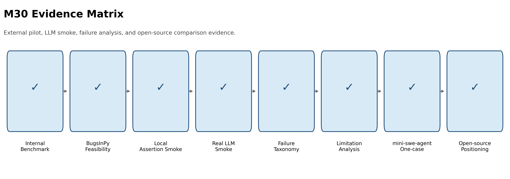
Method
| Component | Role | Evidence |
|---|---|---|
| FailureMemory | Structured state for diagnosis, retrieval, and review. | Error type, evidence, root cause, repair action. |
| EnvDoctor | Routes missing dependency and missing data failures away from source patches. | EnvRepairPlan and suggested user actions. |
| PatchSafetyReviewer | Checks patch risk before confirmation and application. | Approved, blocked, risk level, reasons. |
| Isolated verifier | Applies patches away from the original task and reruns verification. | Command, return code, score, transcript. |
Controlled Benchmark
The internal benchmark is small by design. It validates diagnosis, routing, repair planning, review, and verification behavior. It is not reported as public benchmark performance.
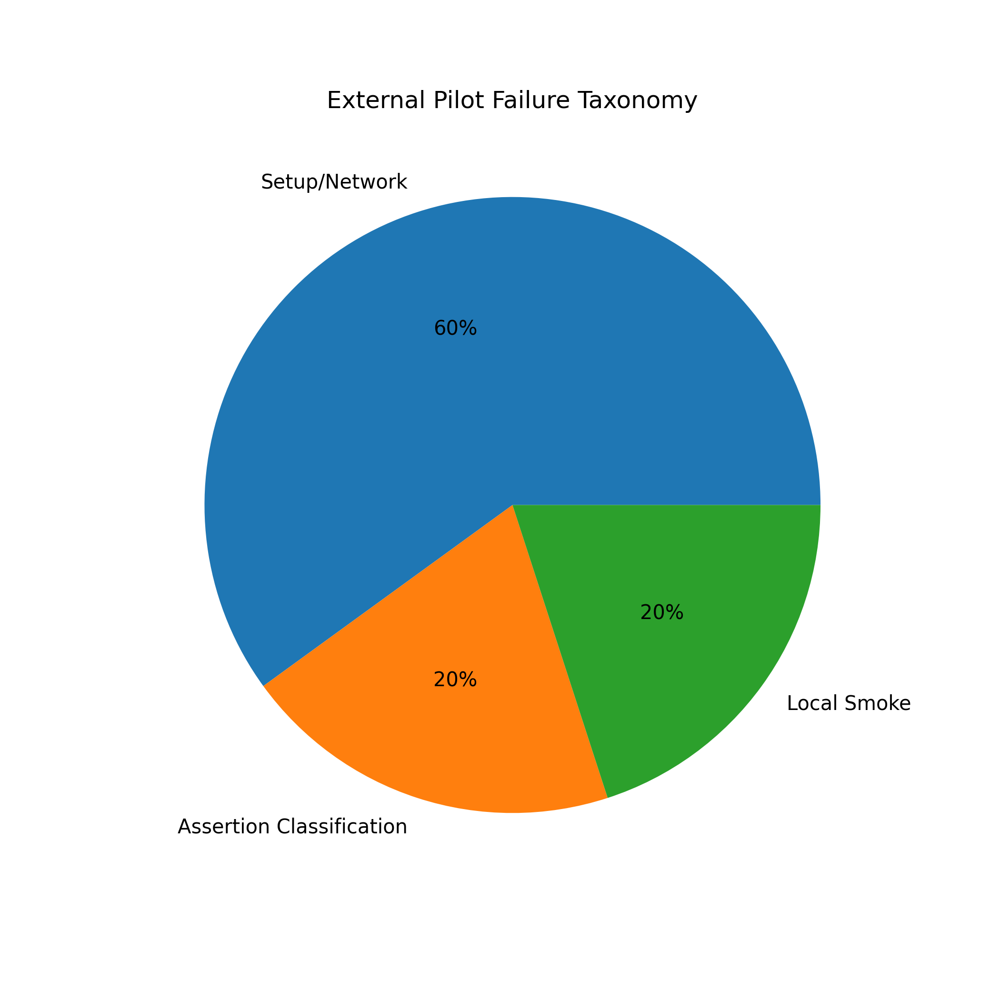
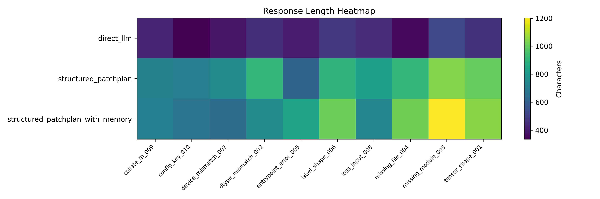
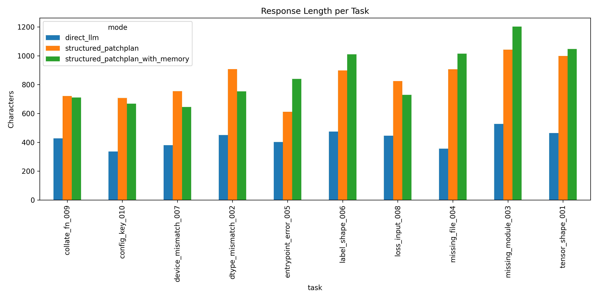
FailureMemory Retrieval
FailureMemory stores the failure type, evidence, root-cause hypothesis, repair action, command context, and verification result. It supports later retrieval and prompt construction.
The current retrieval evaluation is deterministic and scoped to the internal benchmark. It demonstrates memory plumbing and case-based reuse without claiming large-scale semantic retrieval.
LLM Smoke Evidence
The M30 smoke artifacts compare direct LLM repair, structured PatchPlan generation, and retrieved-memory structured PatchPlan generation. These runs support output-format and reviewability analysis, not real-world repair performance claims.
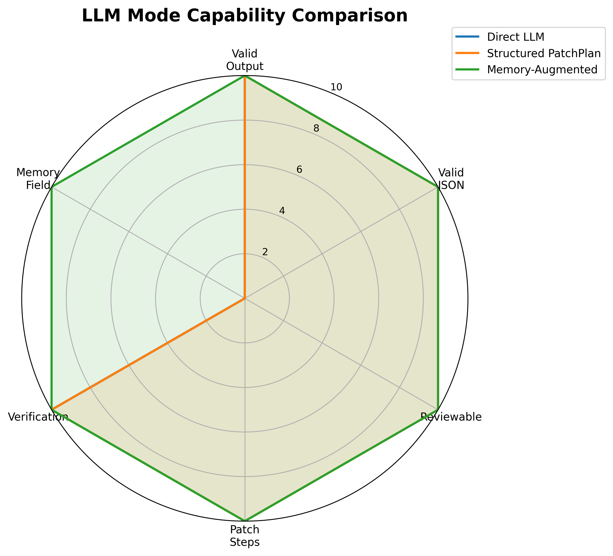
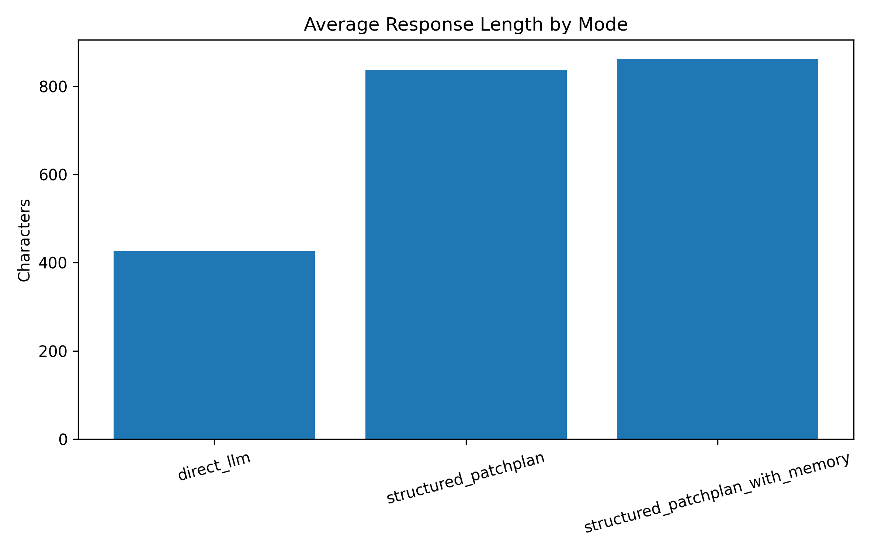
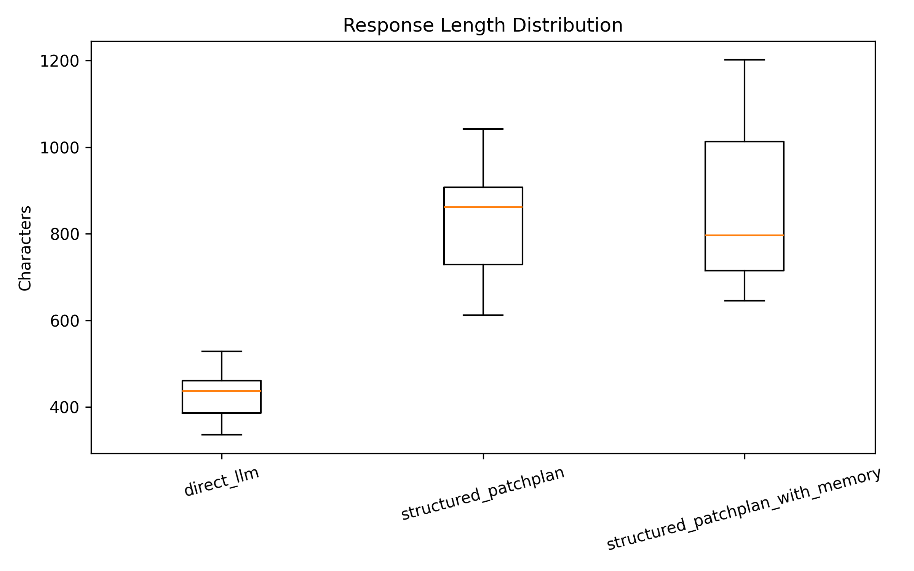
Safety and Ablation
PatchSafetyReviewer checks path traversal, dependency installation, shell-command edits, benchmark mutation, and overly broad changes before any patch is applied.
Ablation artifacts separate diagnosis-only, repair without apply, full rule-based repair, mock LLM repair, and safety stress cases so the contribution of each component can be discussed.
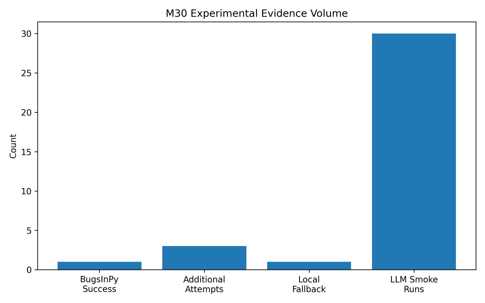
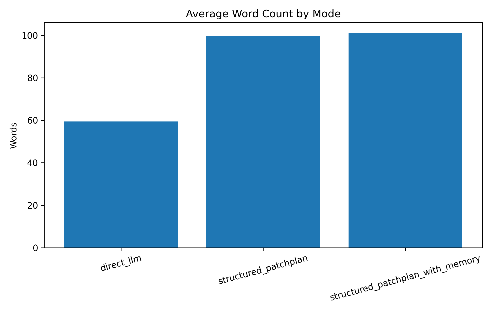
Positioning
SciCodePilot is positioned as a controlled, auditable repair prototype. The comparison focuses on memory, routing, structured planning, safety review, and reproducibility evidence. It does not claim to outperform SWE-agent, OpenHands, AutoCodeRover, or mini-swe-agent on public benchmarks.
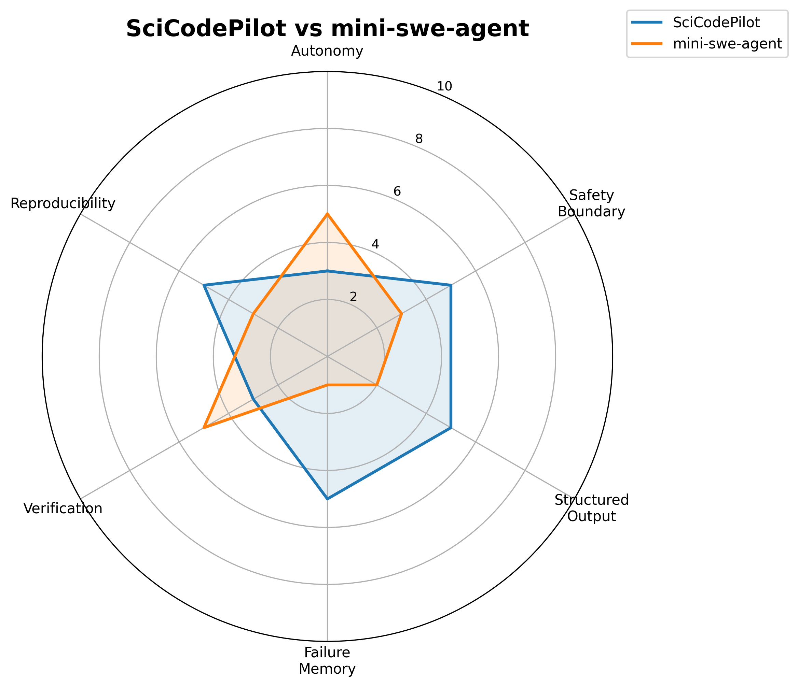
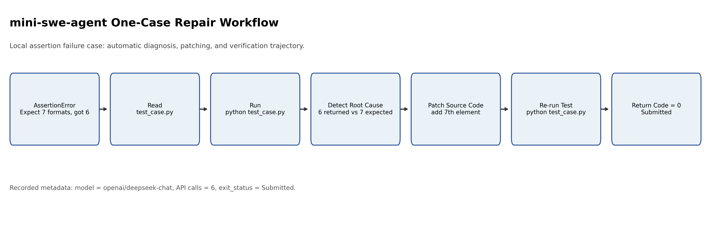
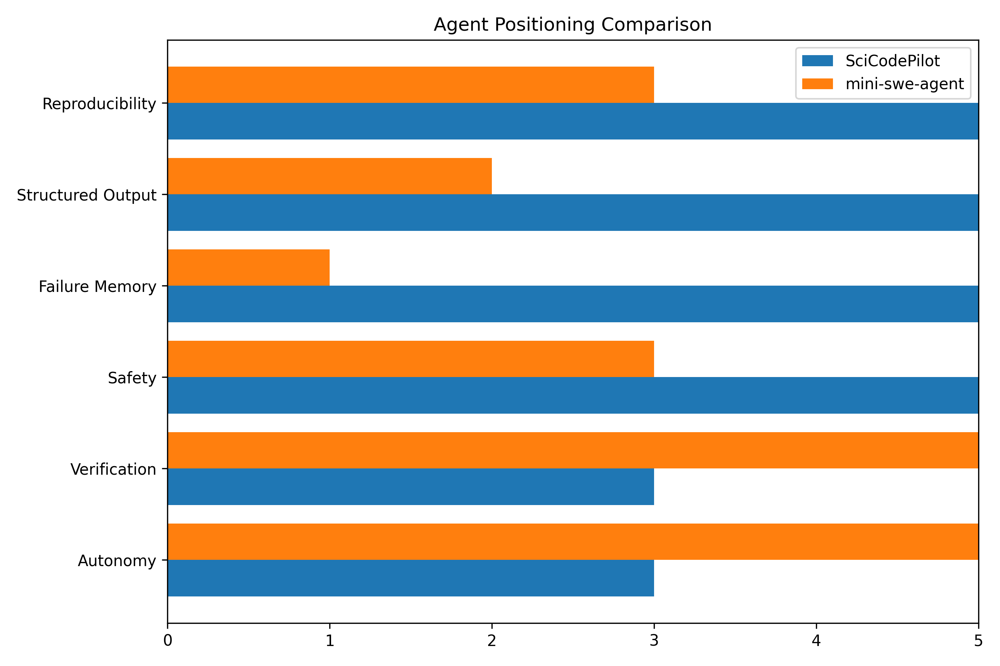
Frontend Interfaces
This page is designed for public sharing. It presents the research story, figures, results, and usage instructions without needing a Python backend.
The local demo streams BackendController events into the browser and supports Run, Confirm Apply, FailureMemory, PatchPlan, Safety Review, Verification, and transcript export.
The Textual app remains as a terminal demo and technical proof that the frontend can consume the same backend event stream.
Run Locally
pip install -r requirements.txt
python scripts/run_web_demo.py
http://127.0.0.1:8000
GitHub Pages can host this static homepage. The live Run / Confirm Apply behavior requires the local FastAPI backend.